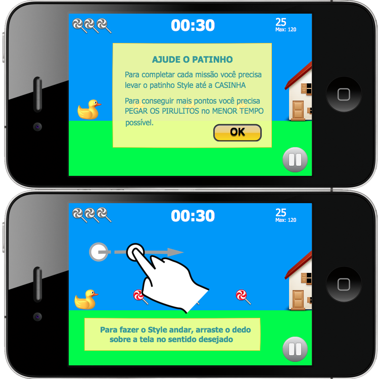
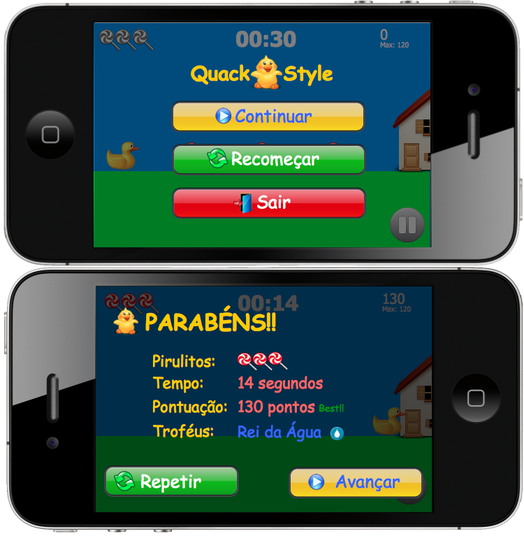

Fase1-1

Na primeira tentativa de jogo a tela 1 deverá ser exibida.
Após pressionar OK deverá ser exibida a tela 2.
Tanto a mensagem quanto a mãozinha deverão sumir somente após o jogador executar o movimento da forma correta
Fase1-2

Tela 1 - Corresponde a tela com exibida caso o jogador pressione a opção PAUSE (no canto inferior direito)